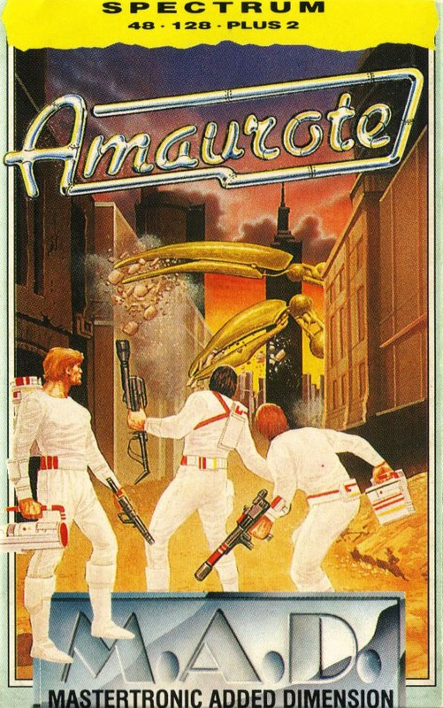
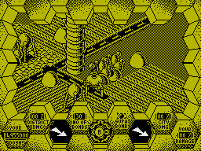
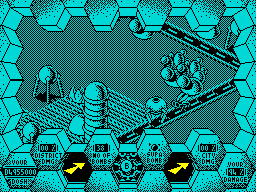
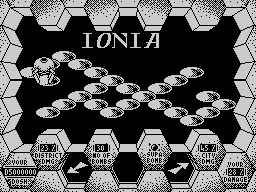

Amaurote


{kind=link}

| Publisher: | MAD |
| Price: | £2.99 |
| Year: | 1987 |
| Source: | CRASH, Issue 40 |

Forgotten Amaurote is a metropolis invaded by a lethal swarm of insects. The city’s 25 sectors are under the mandible, with an insect colony, ruled by its own Queen, established in each. The Queen’s job is simply to produce an army of scouts and drones. While she remains immobile, the scouts fly about and the drones (the most common — and expendable) patrol the ground.
A sector is selected from the title screen, after which the action begins (except on the 128 or + 2, when an animated sequence illustrates the hero entering Arachnus 4, the spider-like combat craft under your control).
The objective is to rid the sector of every insect, before progressing onto the next, and repeating the same procedure. Sectors are illustrated in forced 3D perspective, not scrolling, but with a flip-screen technique where the flip happens just before reaching the screen’s edge.

Scouts and drones are exterminated by shooting, but as each one dies the Queen wastes no time in producing another to keep her army up to strength. Your arsenal also contains bombs, although these can’t be fired until the previous one has detonated.
On Amaurote, the local currency is ‘Dosh’, and a Supabomb powerful enough to kill a Queen costs 5000 Bits of Dosh. This is requested over the ‘Radio Menu’, where additional options such as more Bombs, Rescue and a Repair Service are also available. Once requested, the Supabomb is dropped somewhere within the sector and must be located. The compass used for this task is also useful in discovering the whereabouts of a Queen or the scouts and drones.
When the Queen and her hive of insect subjects has been been destroyed, the Arachnus progresses onto another sector, and then another, until all 25 have been cleared. If the City Damage and Personal Damage metres reach 99 percent, you have failed, and you’re not even worthy to swat a few pesky flies, let alone deal with the horror of Amaurote.

graphics as Arachnus scutles across a
landscape of fear
CRITICISM
“Amaurote’s concept is an old and simple one — seek, locate and destroy. However, with Binary Design’s now familiar style of presentation Amaurote is remarkably slick. The effects are pleasant to watch; the way the letters fade from the screen is superb, and the freaky use of colour linking front end and the game has to be seen to be believed. The graphics, although monochrome, appear solid and are suitably futuristic, making exploration of the 2,500 locations really enjoyable. You can change the preset colour too, so there shouldn’t be much difficulty in finding one that suits you. There’s plenty of action and thought involved in Amaurote to keep your attention for a good few weeks.”
RICKY
“Well! What can I say, this game is just brilliant. I always like original games, and I’ve never seen anything like this before. There are so many different features to Amaurote that they would take too long to explain. The graphics are superb and the animation is unbelievably smooth — the only real disappointment is a lack of colour, but it’s not needed anyway. I almost fell off my chair when I heard that this is a budget game — how can such a well-designed game be so cheap? It’s a must for any Spectrum owner’s collection.”

forgotten, but infested
GARETH
“Now this is more like it. I haven’t seen a game as original as this for ages. Graphically, Amaurote is superb, although lacking in colour variation. It’s also great fun to play. The scenery is densely detailed with all the objects decently sized, although I could have done with more landscape and less of the massive border around the screen’s edge. Amaurote is full of little features — the ‘Radio’ being the best of them — and it has lots of content. But I did find the playing keys strangely situated and very hard to get used to. That said, you’d be foolish to miss this tremendous game at such a cheap price.”
PAUL
COMMENTS
| Control keys: | Y-P up/right, Q-T up/left, H-ENTER down/right, A-G down/left, B-SPACE to fire, CAPS SHIFT for Radio |
| Joystick: | None |
| Use of colour: | Monochrome, but background colour change option |
| Graphics: | Superb, original, well-designed and animated |
| Sound: | Uninspiring on 48K, quite extraordinary on 128 |
| Skill levels: | One |
| Screens: | 100 in each of 25 sectors |
| General rating: | An amazing achievement in budget software, highly playable and addictive. |
| Presentation: | 93% |
| Graphics: | 93% |
| Playability: | 92% |
| Addictive qualities: | 91% |
| Value for money: | 94% |
| Overall: | 92% |
Loading Amaurote on the 128K reveals a host of enhancements. For a start there’s a standard David Whittaker title track, which blares out whilst the usual 48K attract mode goes through its scrolly paces. Once a sector has been selected from the map, a beautifully animated sequence of the Arachnus being manned and lowered to the planet’s surface is accompanied by another Whittaker piece. Gameplay is made infinitely more atmospheric by an exploding queen sequence, and the weird soundtrack. As the 128 version is a significant improvement over the 48K, I’ve supplied separate ratings: Presentation 98% Graphics 94% Playability 93% Addictive Qualities 91% Value for Money 96% Overall 94%